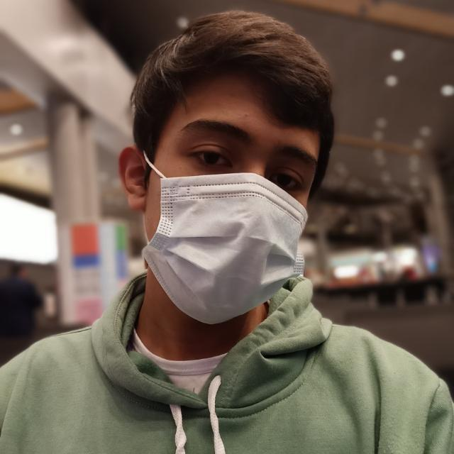

Integrantes

Camilo Otálora
Estudiante de Ingeniería Informática

Felipe Herrera
Estudiante de Ingeniería Informática

Ricardo Ávila
Estudiante de Ingeniería Informática
Después de una cita médica, el médico usualmente nos receta algunos medicamentos que ayudarán a mejorarnos. Sin embargo cuando vamos a reclamar estos medicamentos se puede hacer algo bastante tedioso pues, múltiples factores afectan el adecuado funcionamiento para la entrega de los medicamentos, estos pueden ser: muchas filas por una alta demanda en los medicamentos, falta de stock de algunos medicamentos, mala logística por parte de la EPS para la entrega eficiente de medicamentos, entre otros. Son cosas que perjudican a las personas; tardando de 1h-3h en poder reclamar un simple medicamento que a veces es de vital importancia y es necesario para la vida de una persona
IntegrantesEstudiante de Ingeniería Informática
Estudiante de Ingeniería Informática
Estudiante de Ingeniería Informática
Datos demográficos
Perfil general:
Géneros: Hombres y mujeres
Rango de edad: 18+
Región donde viven: Cundinamarca
Nivel educativo: Sin educación hasta posgrado
Ocupaciones: Campesinos, trabajadores, madres,etc.
Las personas sufren de distintos tipos de enfermedades, por lo que se necesitan medicamentos para poder tratarlas. Madres cabezas de hogares que no tienen tiempo para poder reclamar medicamentos para sus hijos, Algunas personas son dependientes de los medicamentos y los necesitan para poder vivir, etc.
Varias de estas personas son emocionales, extrovertidas; su motivación es poder sacar adelante a su familia, lograr sanar a un ser querido por medio de los medicamentos (Que tenga una mejora), sentirse mejor por fuertes dolores generados por la edad y desgaste del cuerpo, llegar a la vejez y sentirse bien, sin algún dolor
¿Cual es su nombre?
¿Ha experimentado demoras en la entrega de medicamentos?
¿Cuánto ha sido el tiempo que ha tardado en la entrega de medicamentos?
¿Le ha pasado que alguna vez ha ido por un medicamento, esperado; y no logra conseguir ese medicamento?
¿ Cómo le parece la logística para la entrega de medicamentos ?
¿ Crees que haya alguna solución para las largas filas?
Profesionales de la salud; Médicos, farmacéuticos.
Especialistas en administración de salud
Investigadores en Políticas de Salud
Médicos: Con conocimiento en prescripción de medicamentos y tratamiento de enfermedades.
Farmacéuticos: Especializados en medicamentos, su composición, interacciones y efectos.
Enfermeros: Con experiencia en el manejo de pacientes y la administración de medicamentos.
Administradores de Salud: Con experiencia en la gestión y mejora de sistemas de atención médica.
Gerentes de Clínicas y Hospitales: Expertos en la optimización de procesos y recursos en entornos de atención médica.
Epidemiólogos: Expertos en estudios de enfermedades y su impacto en la población.
Convertirse en un experto en la problemática de largas filas para la obtención de medicamentos formulados por las EPS requiere una combinación de conocimientos, habilidades y experiencia en áreas relevantes.
Conocimiento Profundo del Sistema de Salud: Comprender en detalle cómo funcionan las EPS, las políticas de salud, las regulaciones y los procesos de distribución de medicamentos.
Experiencia Clínica o Farmacéutica: Haber trabajado directamente en la atención médica, la prescripción de medicamentos o la gestión de recetas para comprender los desafíos desde una perspectiva práctica.
Experiencia en Administración de Servicios de Salud: Haber gestionado clínicas, hospitales o servicios de atención médica para comprender los aspectos operativos y logísticos de la distribución de medicamentos.
La elección de estos expertos se basa en su capacidad colectiva para proporcionar soluciones bien informadas, multidisciplinarias e innovadoras que aborden todos los aspectos de la problemática de largas filas para la obtención de medicamentos formulados por las EPS.
¿Podría compartir su experiencia y antecedentes en su campo de especialización en relación con el sistema de salud y la distribución de medicamentos?
¿Cuál es su comprensión de las principales causas detrás de las largas filas para la obtención de medicamentos formulados por las EPS?
¿Qué desafíos específicos identifica en el proceso de obtención y distribución de medicamentos dentro del sistema de salud actual?
Dada su experiencia en [campo del experto], ¿cómo cree que su área de especialización puede contribuir a la solución de esta problemática?
Lugares de entrega de medicamentos dados por la EPS
En estos lugares se desarrolla toda la problemática pues, aquí es donde se generan los largos tiempos de espera para la reclamación de medicamentos por distintos factores como por ejemplo: la gran cantidad de personas reclamando medicamentos, falta de medicamentos, falta de personal para la entrega, etc.


En estos lugares se presentan muchas menos filas, reduciendo el tiempo de espera para la reclamación de algo o un servicio pues, en el primer caso las personas pueden tomar su producto, pagar e irse. sin tener que esperar. En la otra parte existe un orden para cada servicio y las personas capacitadas para hacer el proceso.


1. A las personas no les gusta esperar por sus medicamentos, sin embargo no se les ocurre ninguna solución al respecto.
2. Las personas están acostumbradas a disponer de mucho tiempo para gestionar sus medicamentos.
3. Algunos proponen mayor orden para gestionar los medicamentos, no obstante estan dispuestos a esperar.
4. Hay una mala administración por parte de las EPS en la distribución de los medicamentos, pues hacen perder tiempo a los usuarios al no haber disponibilidad en los medicamentos, haciéndolos volver otro día para poder entregarlo.
5. El acceso a la atención médica y a los medicamentos es esencial para el bienestar de las personas y puede inspirar reflexiones sobre cómo mejorar los sistemas y estructuras que lo respaldan.
¿Cómo podríamos optimizar la gestión en los puntos de atención para minimizar las largas esperas, reducir las aglomeraciones y así mejorar la experiencia de los pacientes?
¿Cómo podríamos mejorar la capacitación de los afiliados y empleados de las eps para entrega de medicamentos?
Cómo podríamos mejorar la administración de EPS para que se regule de mejor manera la gestión de afiliados en EPS, de recursos de salud y la disponibilidad de medicamentos.
Desafío de diseño:
¿Cómo podríamos reducir los tiempos de espera en el proceso de reclamación de medicamentos formulados por las EPS?
Oportunidad de diseño:
¿Cómo podríamos diseñar juegos interactivos que hagan que la capacitación en la entrega de medicamentos sea atractiva y altamente motivadora para los afiliados y empleados de las EPS?
Descripción de la idea
Los juegos interactivos ofrecen una plataforma educativa atractiva y participativa que permite a los participantes aprender de manera más efectiva y retener información de manera duradera.
¿Cómo resolverá esta idea el desafío de diseño?
La propuesta de juegos interactivos mejora la capacitación de los afiliados y empleados de las EPS para la entrega de medicamentos al hacer que la capacitación sea más efectiva, atractiva y personalizada, lo que a su vez contribuye a una atención médica más segura y eficiente.
¿Cómo resolverá esta idea el desafío de diseño?
La creación de bases de datos con información de medicamentos aborda el desafío de acceso eficiente al proporcionar una solución integral y actualizada que beneficia tanto a profesionales de la salud como a pacientes, mejorando la toma de decisiones en el ámbito de la atención médica.
Oportunidad de diseño:
¿Cómo podríamos diseñar una API que permita a los usuarios consultar fácilmente la base de datos de información de medicamentos?
Descripción de la idea
La creación de bases de datos con información de medicamentos nos servirá para abordar de manera efectiva el problema general de la disponibilidad de determinados medicamentos.
Desconocimiento del manejo de tecnologías de información (RV) por parte de algunas personas, lo que genera indiferencia y apatía sobre el querer usar tecnología
Para superar este obstáculo, se requiere del lanzamiento de una versión minimalista y simplificada del prototipo a los usuarios para que sea intuitivo y fácil de usar.
Costos y accesibilidad para implementar la realidad virtual en los centros de salud (Equipos RV y el juego interactivo), lo que
Para superar los costos de los equipos de realidad virtual, se puede acudir al financiamiento de otras entidades como el gobierno o fundaciones privadas, también, se podría llegar a un convenio o colaborar con organizaciones como universidades, empresas; que estén interesadas en la salud y la tecnología. Un punto a favor es que el contenido creado podría ser utilizado por múltiples EPS, haciéndolo llamativo y mejorando el servicio.
Centro Médico de la Universidad de La Sabana
Lo pusimos a prueba con personas del centro médico.
Cuál es la reacción de las personas al ver nuestro proyecto
Comprobar si las personas entienden entender nuestro juego.
Que medios visuales son efectivos para la recepción de información en nuestro proyecto
La innovación y la experiencia debido a que es una manera diferente de enseñar a las personas. También una persona del centro de salud estaba de acuerdo en poder mejorar la problemática que estamos tratando.
El entretenimiento que les causó el juego, debido a que querían sacar todas las respuestas correctas por su conocimiento gracias al video
El hecho de que se haya encontrado una manera de aprender y distraerse mientras se hace una larga fila de espera, ya que así los usuarios y empleados pueden aprender mejor del sistema, para que en una próxima vez sepan que hacer y se demoren menos tiempo en la entrega de sus medicamentos.
Debemos crear un videojuego más explicativo e ilustrativo. Para que las personas puedan recepcionar mucho mejor la información y no lleguen a olvidarla, puesto que hubo gente que no sabía las respuestas a algunas preguntas.
Una interfaz más amigable, crear videos más llamativos para la mejor absorción del conocimiento y quede por más tiempo en la persona.
Podemos mejorar el prototipo haciendo un mejor videojuego que contenga más elementos ilustrativos que permitan de una mejor manera la percepción de la información que queremos dar.
Por medio de un juego interactivo hecho en realidad virtual. Brindaremos una capacitación a los usuarios y empleados de las EPS para el proceso de reclamación de medicamentos. Este será intuitivo y fácil de usar para que todas las personas puedan acceder a él. Tendrá un contenido llamativo y fácil de entender a través de imágenes o videos que facilite el entendimiento Esto se hará con la ayuda de distintos convenios con varias entidades como el gobierno y fundaciones para crear el juego, además, de financiar los equipos de RV; gracias a esto optimizara el proceso en la reclamación de medicamentos.
Para la creación de nuestro proyecto necesitamos en primer lugar alrededor de 5 millones de pesos por cada stand ubicado en las EPS Vamos a comprar 4 equipos de visores independientes de RV en cada stand. ¿Por qué estos equipos? Estos visores no necesitan un ordenador externo o un teléfono para funcionar.
Haciéndolo mucho más práctico pues las personas tan solo tienen que utilizarlo, además ofreciendo una experiencia más inmersiva. Cada uno de estos equipos oscila entre 1 millón de pesos y 1.3 millones. Habrá una persona en cada stand para que pueda ayudar a las personas e invitarlas a usar el dispositivo de RV. A esta persona se le pagará con el mínimo salario mínimo.
Para la creación del videojuego estimamos aproximadamente 10 millones de pesos que se le pagará al desarrollador de software, un diseñador gráfico y el diseñador de experiencia de usuario.
Este presupuesto puede variar, la idea es poder conseguir algún convenio con el ministerio de salud y a su vez el ministerio de tecnología. otra opción es cualquier institución educativa que les apasionan estos temas, de esta manera. bajando los costos.
Luego de las compras del equipo de realidad virtual estos servirán para bastante tiempo, pues cualquier persona lo podrá usar.
Lo que nosotros vemos viable es una actualización del videojuego cuando sea necesario para añadir o hacer un cambio dependiendo del servicio de la EPS, generando un costo adicional dependiendo la actualización.
Esta idea aunque sea un gran costo al inicio será algo bastante llamativa e innovadora puesto que las personas podrán capacitarse de como hacer el correcto proceso en la reclamación de los medicamentos de las eps. Además ha sido comprobado que al utilizar esta tecnología la retención de la información en este caso la capacitación durará por mucho más tiempo al tener esta experiencia.
Para poder comenzar a hacer nuestro proyecto o prototipo necesitamos el siguiente personal:
-Desarrollador de Software en Realidad Virtual: Este será el encargado del desarrollo del juego virtual por medio de realidad virtual.
-Un diseñador de experiencia de usuario (UX): Éste será encargado de hacer que el juego sea fácil de usar, accesible y agradable. Además de una interfaz intuitiva y atractiva.
-Expertos en Contenido: Estas personas van a ser quienes nos brindarán la información y tienen experiencia de como es el proceso de reclamación de medicamentos. Diciéndonos en qué punto nos debemos centrar más para optimizar el proceso.
-Diseñador gráfico: Este se encargará de la parte visual de todo el videojuego.
-Especialista en Adquisición de Hardware de Realidad Virtual: Esta persona será la encargada de conseguir los equipos de RV, además podrá realizar el mantenimiento y gestión de todos estos dispositivos
-Abogado: va a ser la persona encargada de orientarnos en el proceso de administración de datos sensibles y la colaboración con entidades gubernamentales.
-Especialista en Relaciones Públicas y Comunicaciones: Será la persona encargada de manejar la comunicación con las entidades colaboradoras en el proyecto. En este caso las instituciones educativas, el ministerio de salud y el ministerio de tecnología.
Para nuestro proyecto buscamos estos socios:
Socios de financiación
-Entidades gubernamentales (Ministerio de salud y ministerio de las TIC) : Estos socios nos ayudarán en la financiación del proyecto para hacerlo realidad.
-EPS: Las eps podrán dar parte del presupuesto necesario. ya que el beneficio será principalmente para ellas. optimizando la reclamación de medicamentos Además también pueden ser socios de capacidad pues ellos nos darán la información con la cual crearemos el juego en RV.
Socios de capacidad
Instituciones educativas: Los estudiantes de universidad o del servicio nacional del SENA podrán ayudarnos en la creación del videojuego de esta manera ayudando a las EPS y obteniendo mucha paciencia en el proceso.